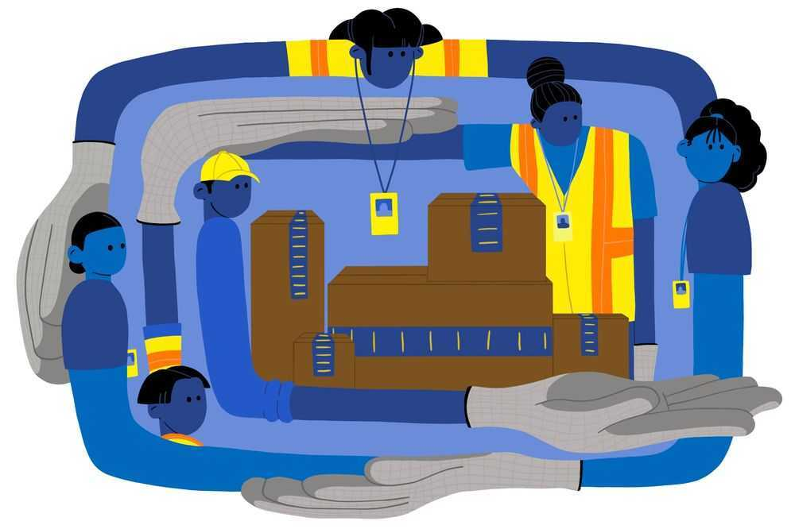

What is a Secondary Strike?
Taking any strike or boycott action outside of your direct workplace. In other words- sticking up for someone else! Or even sticking up for yourself when your direct workplace is influenced by some other organization...
Currently under the National Labor Relations Act Secondary Strikes are illegal in the USA unlike most of the rest of the world.
The PRO (Protect the Right to Organize) Act removes prohibitions on workers acting in solidarity with workers at other workplaces & protects workers who engage in peaceful protest actions with their fellow workers.
To Solve our climate and economic crises, we need a Green New Deal
To win a Green New Deal, we need mass worker power
To build mass worker power, we need to pass the PRO Act!

ILLUSTRATOR: SAMANTHA SLINN
Solidarity with the workers at Bessemer
Created by a rank and file member of the DSA - Saturday, March 13, 2021